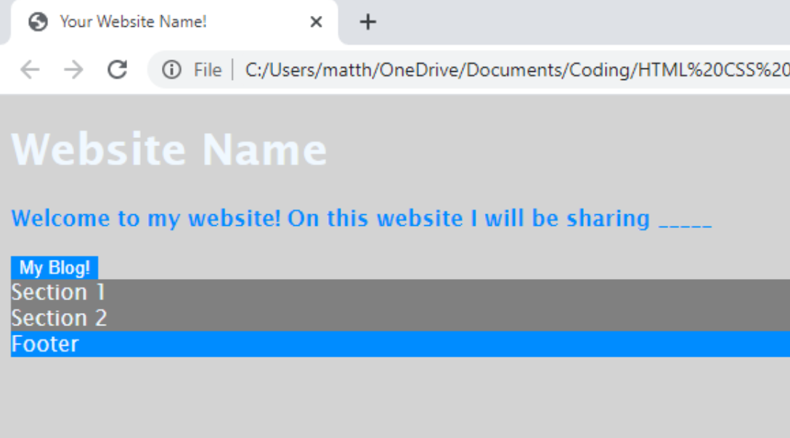

In this lesson, we will begin to create a layout for our website using CSS and HTML and style it as well.
Creating a layout for your website is extremely important to the overall organization and feel of the website. Without it, the website can feel cluttered and the user experience won’t be positive.
To do this, within the HTML <body> </body> tags we are going to add section tags, <section> </section> and a footer tags for the bottom of the website.
This will allow us to put more information into this webpage in an organized way. Similarly, the footer section can contain general information and on many websites this where a copyright goes.
The code should look like this:
<body>
<Website Name
<p>
<b>Welcome to my website! On this website I will be sharing
</p>
<button>My Blog
<section>Section 1
<section>Section 2
<footer>Footer
</body>
Now, with what we learned last lesson, we will style these sections and the footer as you would like.
This is how my website now looks:
And this is the code for it:
button {
background: rgb(0, 140, 255);
color: white;
border: gray;
}
section {
background: gray;
}
footer {
background: rgb(0, 140, 255);
}
Now we will space out the layout correctly using the CSS tags margin and padding which allows the website to be spaced out and organized.
button {
background: rgb(0, 140, 255);
color: white;
border: gray;
padding: 10px;
}
section {
background: gray;
padding: 30px;
margin: 40px;
align-items: center;
}
footer {
background: rgb(0, 140, 255);
padding: 30px;
}
The final part of this lesson’s layout and styling is to center the different parts to this webpage.
First, we are going to go to go into the CSS code under the body section. There, make sure there is ; following the color that we made the paragraph. Then write: text-align: center;
Similarly, we will add another section of CSS code based on the previous HTML by writing:
h1 {
Then we will again write:
text-align: center;
The code should look like this:
body {
font-family: 'Lucida'; 'Lucida Sans', 'Lucida Sans Regular';
color: aliceblue;
background: rgb(211, 211, 211);
text-align: center;
}
My website looks ike this:
Common Mistakes:
Make sure you are using a semicolon ( ; ) after each line of CSS code. Also, make sure all of your CSS code lies within opening and closing brackets, ( { } ).
Finally, make sure you save your code before, File, Save or ctrl s before going into your files and testing the file in your browser.